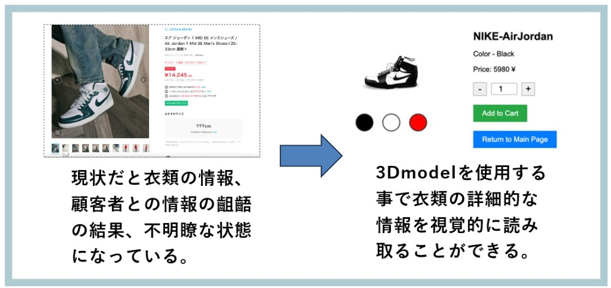

アパレル系ECサイトにおけるthree.jsを使用した3D仮想モデルの導入

研究背景
従来のアパレルサイトにおける商品画像から読み取れる情報はとても少ない。
研究目的
従来の2D画像による商品表示の限界を3D技術を使用し克服。より豊かな購買体験を提供する。3Dモデルを活用して、ユーザーの商品理解を向上させる。返品率の低減と顧客満足度の向上の可能性を示す。
方法論・計画
- 3Dmodel制作: ソフト: Blender
- システムの制作: IDE: Visual Studio Code, 言語: JavaScript
- 3Dmodelとシステムの結合: ライブラリ: Three.js, API: model-viewer
- テスト・導入: webブラウザ上で動作
本システムでは、Blenderで制作した3Dモデルをglbファイルに変換し、model-viewerを用いてThree.jsと組み合わせてWeb上に導入した。光源、カメラ、サイズ調整の最適化も可能とした。
結果
ユーザーがWeb上で3Dモデルを直感的に操作し、衣類の質感やサイズ感を視覚的に把握できる環境を構築した。モデルの回転やズーム機能で詳細な情報取得が可能となり、顧客体験の向上が期待される。
参考文献
- Recustomer,「2023年度 ECサイトの返品・交換データ調査レポート」, link
- How to Reduce Ecommerce Return Rates: link
- Fashion E-Commerce in the 3D Digital Era: link
- model-viewer